Пункты B1, B4 и B5 из задачи-лендинга.md. Всё отрисовано токенами и картинками самого
лендинга, тексты настоящие. На странице пока ничего из этого не применено — выбираем и применяю.
Баги B2 (лайтбокс при зуме) и B3 (шапка на широком экране) уже починены в microservices/index.html.
Строка шага в секции «Как всё устроено по шагам». Во всех вариантах остаётся
ревью от 30 мая (cr03.webp, параллельная регистрация и 409 вместо 500), подсказка
«Нажми на скриншот» снята, остальные 35 ревью — по кнопке.
Кожаные скрупулезно проверят практическое задание и покажут ошибки. А ещё отправят видео с идеальным решением, как бы они сами писали код в этом кейсе — с разбором всех нюансов и типичных ошибок
Смотреть все ревью36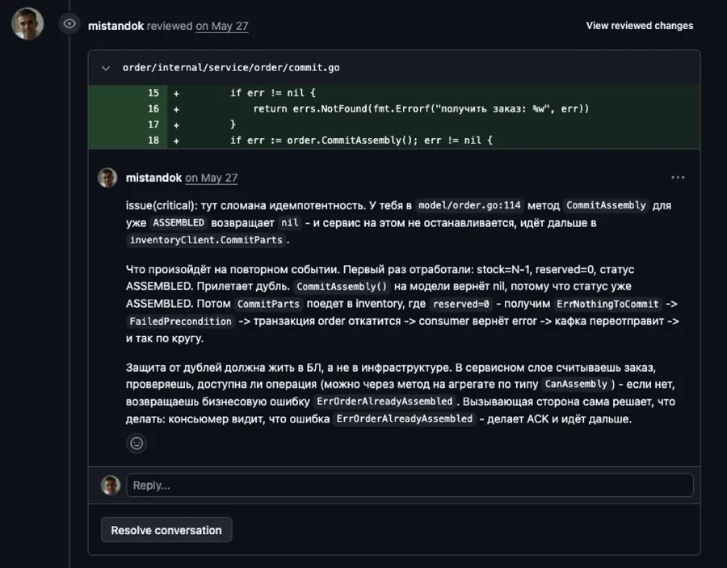
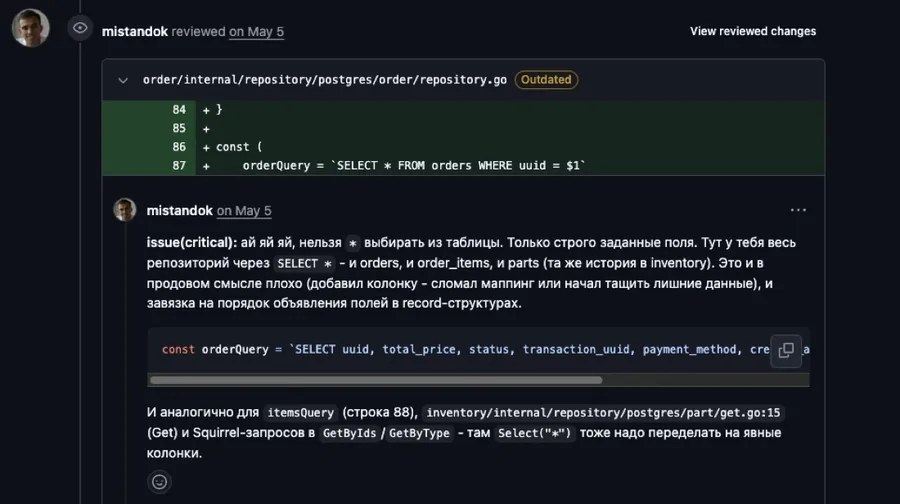
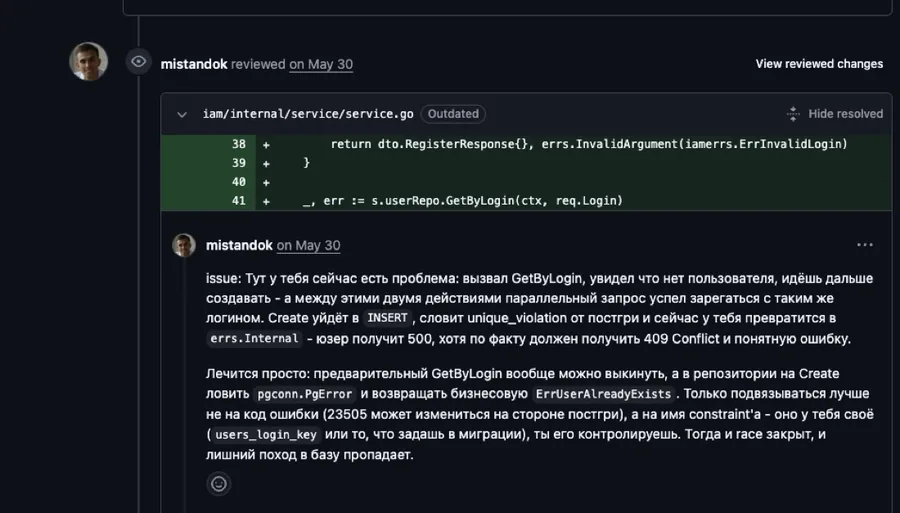
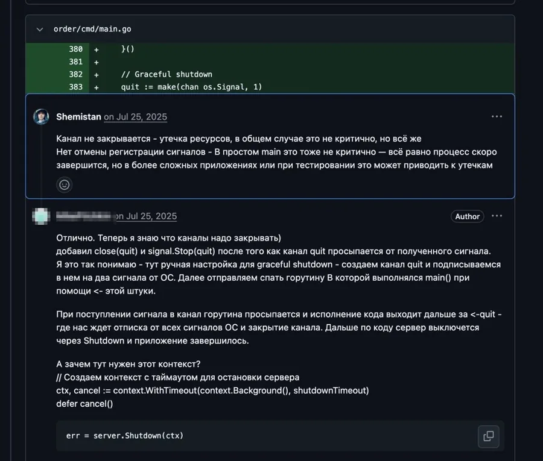
Нажми на скриншот — откроется целиком
Четыре обрезанных куска по 262px: текст комментария в масштабе 0.29 от оригинала, прочитать нельзя ни один. Плюс подсказка и кнопка — три разных приглашения кликнуть в одной колонке.
Кожаные скрупулезно проверят практическое задание и покажут ошибки. А ещё отправят видео с идеальным решением, как бы они сами писали код в этом кейсе — с разбором всех нюансов и типичных ошибок
Смотреть все ревью36Лучше: комментарий целиком и читается — масштаб вырастает с 0.29 до 0.60, в колонке одно действие вместо трёх. Минимальная правка: меняется только разметка колонки. Хуже: картинка ниже текстовой колонки, строка выглядит чуть пустее четырёх плиток.
Кожаные скрупулезно проверят практическое задание и покажут ошибки. А ещё отправят видео с идеальным решением, как бы они сами писали код в этом кейсе — с разбором всех нюансов и типичных ошибок
Смотреть все ревью36Лучше: масштаб скриншота 0.71 — код и имена файлов читаются уже спокойно, высота картинки почти догоняет текст, строка смотрится уравновешенной. Хуже: ломается ритм секции — у трёх остальных шагов колонки ровно пополам, этот один будет шире.
Кожаные скрупулезно проверят практическое задание и покажут ошибки. А ещё отправят видео с идеальным решением, как бы они сами писали код в этом кейсе — с разбором всех нюансов и типичных ошибок
Смотреть все ревью36Лучше: подпись объясняет, что это настоящее ревью настоящего участника, и заодно заменяет снятую подсказку — подложка собирает колонку в один объект. Хуже: поля подложки съедают 28px ширины, масштаб скриншота 0.56 — меньше, чем в A; и появляется ещё один текст в колонке, где заказчик просил разгрузить.
Секция «Участники оценивают качество материала на 4.94/5». Сцены ниже обрезаны по ширине контейнера страницы (1120px) — видно ровно то, что помещается в экран без прокрутки карусели.
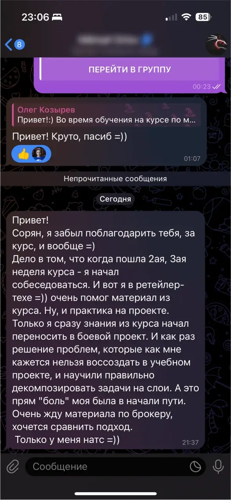
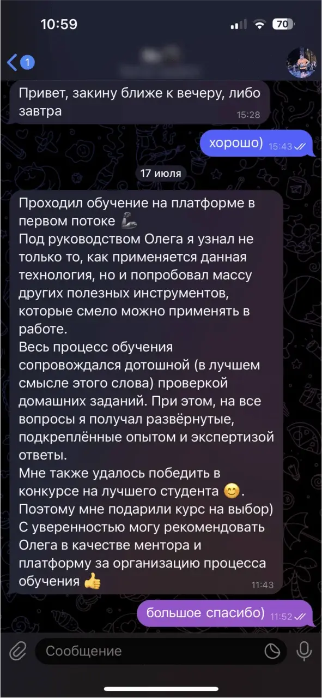
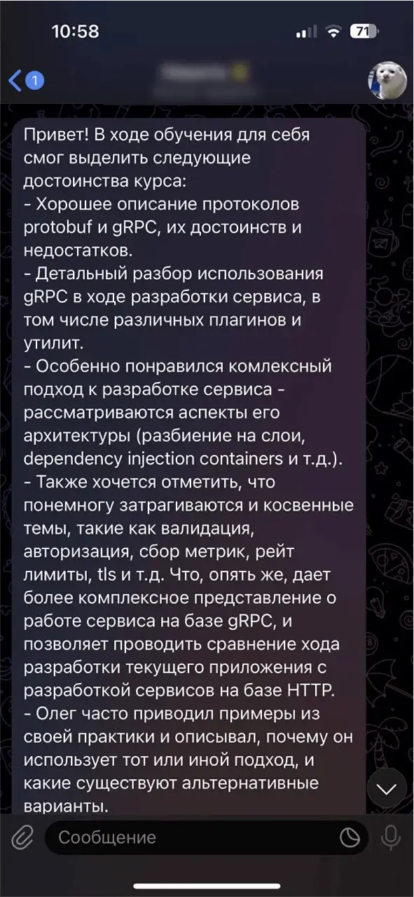
Карточка выше, чем экран ноутбука под шапкой: подпись 24px и скрин 9:16 дают 765px. Видно три карточки из шести, низ подписи почти всегда за кадром.
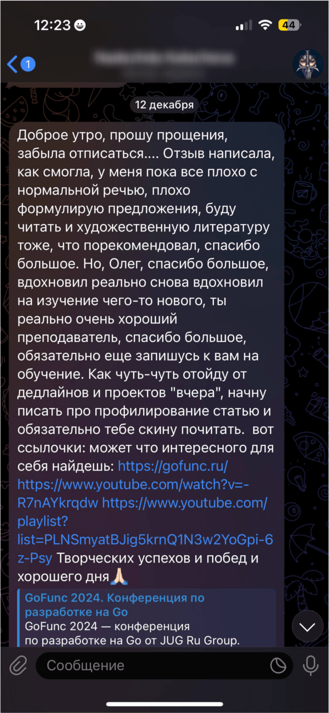
Лучше: высота падает с 765 до ~420px — карточка целиком помещается в экран, в ряд входит четыре с хвостом пятой, видно, что отзывов много. Устройство блока не меняется, правятся четыре числа в CSS. Хуже: скриншот обрезан сильнее (3:4 вместо 9:16) — переписки видно меньше, она тут и так работает фактурой, а не текстом.
Лучше: глаз сначала читает смысл отзыва, скриншот работает печатью подлинности, а не картинкой, которую пытаются разобрать; высота ~360px, в ряд четыре с хвостом. Хуже: подписи у отзывов разной длины, и верхние плашки расходятся по высоте — ряд перестаёт быть ровным; скриншот обрезан до квадрата, от переписки остаются две-три реплики.
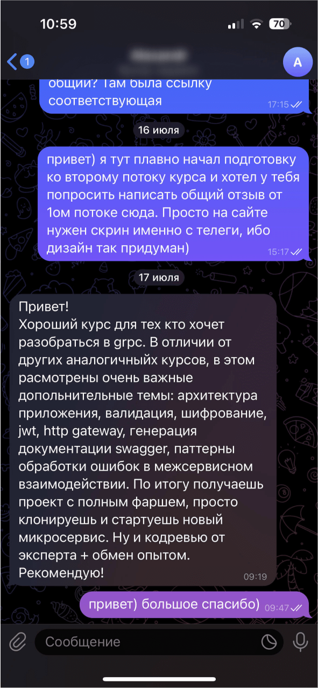
Лучше: все шесть отзывов видны сразу, стрелки и скрытый контент исчезают — никто не упирается в «а там ещё что-то есть». Карточка 360 остаётся привычной ширины, режется только высота. Хуже: блок занимает два ряда вместо одного, страница становится длиннее; шестёрка — потолок, седьмой отзыв сетку сломает.
Подзаголовок первого экрана. Текст везде тот же, меняется только оформление пяти названий.
Научись разрабатывать высокопроизводительные, масштабируемые микросервисы, как в ВК Yandex OZON СБЕР Т-Банк, и увеличь свои шансы на трудоустройство в BigTech или повышение грейда
Пять рамок подряд разрывают строку на куски и читаются как кнопки, на которые надо нажать. При переносе строки плашка уезжает на вторую — рваный край.
Научись разрабатывать высокопроизводительные, масштабируемые микросервисы, как в ВК·Yandex·OZON·СБЕР·Т-Банк, и увеличь свои шансы на трудоустройство в BigTech или повышение грейда
Лучше: фраза снова читается как фраза — компании выделены цветом и весом, а не коробками; переносится без рваного края. Самое минималистичное из трёх. Хуже: названия теряют статус «логотипной» строки, при беглом взгляде могут проскочить незамеченными.
Научись разрабатывать высокопроизводительные, масштабируемые микросервисы, как в ВК Yandex OZON СБЕР Т-Банк, и увеличь свои шансы на трудоустройство в BigTech или повышение грейда
Лучше: компании заметны сильнее, чем в A, но строка остаётся сплошной — жёлтая линия подхватывает акцент страницы, не создавая пяти прямоугольников. Хуже: подчёркивание читается как ссылка — кто-то попробует кликнуть.
Научись разрабатывать высокопроизводительные, масштабируемые микросервисы, как в бигтехе, и увеличь свои шансы на трудоустройство в BigTech или повышение грейда
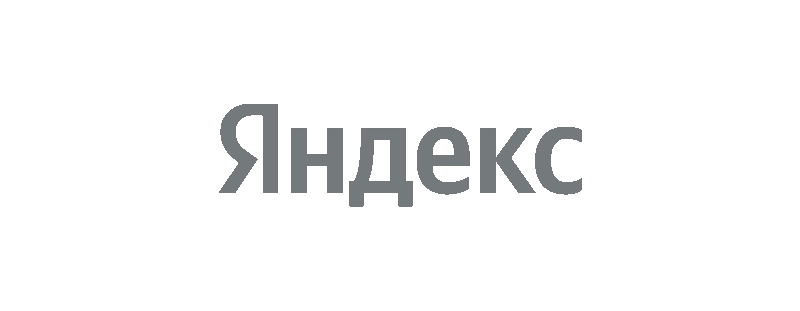
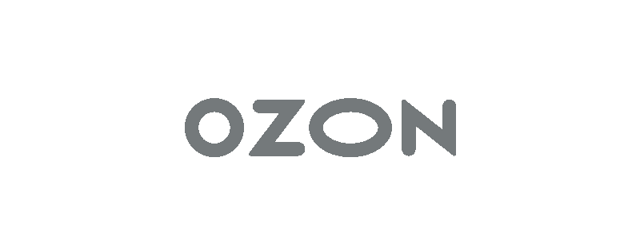
Лучше: настоящие логотипы вместо текста, подзаголовок становится короче и чище, строка логотипов — привычный знак доверия под первым экраном. Хуже: ниже по странице уже есть секция с этими же восемью логотипами — будет повтор; и меняется текст подзаголовка, значит правка идёт ещё и в контент-файл.